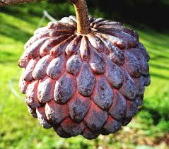

|
It is also very highly regarded in tropical and subtropical areas. Fruits with sweet custard-like pulp are from 3 to 5 inches in diameter with a lumpy green skin and ahead maturity the fruit has a bluish or white blush. Some varieties are developed that have a red blush or red skin which are more attractive. At maturity fruits have a custard like white pulp with small black seeds and the sweet flesh is eaten fresh or used for milkshakes and ice creams. |
|  |
The fruit is round in shape or heart-shaped or ovate or conical, 2 to 3 inches in diameter, yellowish green, green, pink or purple in color with attractive nature. The surface is a tuberculate and covered with a whitish bloom. The pulp is white, custard-like, sweet and a little acidulous in flavor. |